20 research-backed product concepts at the intersection of health trends, orange chicken, functional beverages, and useful packaging innovation.
GLP-1 is the #1 health trend of 2026. Orange chicken is America's most-loved Asian-American dish. Functional beverages are a $245B market growing at 8.8% annually. Packaging is becoming a strategic differentiator. This workshop asks: what happens when you put all four of these forces in a room together?
"You don't have to choose between delicious and functional. Not anymore."
The $93.5B frozen food market has protein bars and it has takeout knockoffs, but it doesn't have a brand that commits fully to being both at once. "ZEST" (working name) enters as the first Functional Takeout brand — a line where every beloved takeout format gets a clean-ingredient, functional-purpose reformulation. Orange chicken is the anchor SKU. It's the category's most recognizable dish, the one everyone knows and loves, and the perfect bridge between comfort and aspiration.
The positioning isn't "healthy orange chicken." It's "orange chicken that does something." 22g protein, 8g prebiotic fiber, GLP-1 aligned portioning. The sauce is clean — no HFCS, no concentrates, actual orange zest. The chicken is whole-muscle. The first product does one thing well. Future SKUs follow the same formula applied to General Tso's, teriyaki, sweet-and-sour. The brand becomes a filter, not a flavor.
Category design is about owning a new lane before anyone else names it. "Functional Takeout" doesn't exist as a shelf set today. The first brand to claim it sets the terms for everyone who follows.
| Whole-muscle chicken (IQF) | $1.85/serving |
| Orange sauce (fresh-press, no concentrate) | $0.65/serving |
| Prebiotic fiber blend | $0.22/serving |
| Packaging (mono-material recyclable tray) | $0.38/serving |
| Co-man + labor | $0.90/serving |
| Total COGS | ~$4.00/serving |
| Target retail | $9.99 (12oz, 2 servings) |
| Gross margin (to brand) | ~42% assumption |
Building a brand platform (not just a SKU) requires co-man relationships, frozen distribution, cold chain, and retailer negotiation simultaneously. First SKU can be tested via a single co-packer with IQF chicken capability. Brand extension cadence must be managed carefully — premature SKU proliferation kills margin.
"The Olipop for people who love takeout."
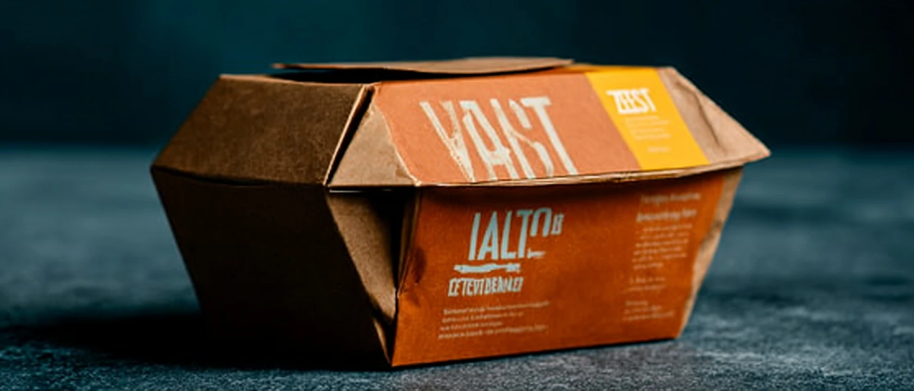
Olipop and Poppi proved that prebiotic soda could go mainstream by making gut health feel indulgent. Nobody has done this for Asian flavor profiles. The Orange Chicken Prebiotic RTD takes mandarin orange, fresh ginger, and chili — the exact flavor trio that defines orange chicken — and builds a sparkling prebiotic beverage around it. 35 calories. 5g prebiotic fiber (chicory root + green banana). Naturally sweetened with real orange juice and monk fruit. Zero sugar crash.
This isn't an "orange soda with a health claim." The flavor is earned — mandarin, not artificial orange; fresh ginger bite, not ginger flavoring; a whisper of chili that warms without burning. It's designed to be drunk alongside a meal, not instead of one. The can looks like it belongs on the same shelf as Vacation sunscreen and Fishwife tinned fish — premium, confident, visually distinctive.
The positioning hook: "Made for the meal everyone orders on Friday night." It pairs specifically with takeout. That's the occasion, that's the shelf placement pitch, and that's the TikTok content strategy.
| Mandarin orange juice (NFC) | $0.18/can |
| Prebiotic fiber blend (chicory + green banana) | $0.14/can |
| Ginger + chili extract | $0.06/can |
| Can + carbonation + co-packing | $0.48/can |
| Monk fruit sweetener | $0.04/can |
| Total COGS | ~$0.90/can |
| Target retail | $3.49–$3.99 / 12oz |
| Gross margin (to brand) | ~55% assumption |
Beverage co-packers for prebiotic soda are widely available (SCI, ABA, independent craft). Shelf-stable, no cold chain. DTC-first launch reduces retail complexity. Key challenge: mandarin NFC sourcing consistency and achieving ginger-chili balance at scale without bitterness.
"30g protein. Real orange. No more chalky vanilla."
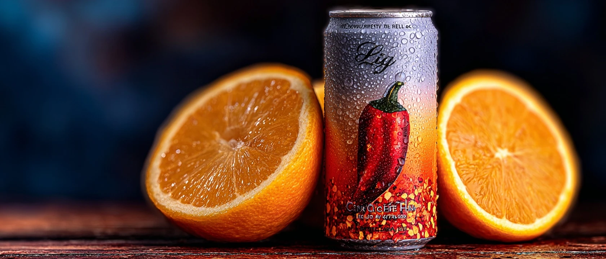
The protein shake category is drowning in vanilla, chocolate, and strawberry. Every format is sweet, every shake is dessert-adjacent, and the GLP-1 consumer who is already eating less sweet food is being ignored entirely. The Orange Chicken RTD Protein Shake takes the savory-sweet-citrus flavor profile of orange chicken and builds a 30g protein beverage around it — the first high-protein RTD positioned around a savory flavor tradition rather than a candy-bar analogue.
The flavor profile is orange zest, ginger, and a subtle umami warmth from chicken broth concentrate — essentially a drinkable orange chicken sauce that happens to be a protein delivery vehicle. Chilled in a 14oz glass-look bottle. Sweetened only with mandarin juice and monk fruit. No artificial flavors. The bottle says nothing about chicken — it says "Mandarin Ginger Protein" and leans into the citrus-and-spice branding.
This earns its format because it solves a real problem the protein shake market has ignored: the consumer who wants satiety and protein but is tired of eating dessert three times a day.
| Whey protein isolate (30g) | $0.72/bottle |
| Mandarin juice + ginger extract | $0.22/bottle |
| Chicken broth concentrate (umami base) | $0.08/bottle |
| Bottle + cap + label | $0.35/bottle |
| Aseptic filling / co-packing | $0.55/bottle |
| Total COGS | ~$1.92/bottle |
| Target retail | $4.49–$4.99 / 14oz |
| Gross margin (to brand) | ~48% assumption |
Aseptic RTD co-packers are available but require minimum runs of 50K+ units. Flavor stability of chicken broth concentrate in a chilled RTD requires R&D validation. Key risk: consumer acceptance of savory protein shake — requires taste panel investment before scale. Cold chain required for retail.
"Pour it on anything. It works on everything."
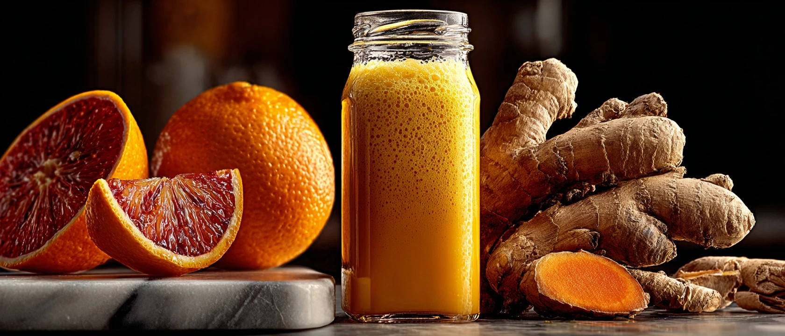
Hot sauce had its cultural moment. Sriracha mainstreamed Asian condiments. What's next is the orange chicken sauce — not as a cooking sauce for one dish, but as a universal drizzle, glaze, and dipping sauce that goes on everything. The "everything" positioning is the entire strategy: rice bowl, noodles, grilled chicken, roasted vegetables, fried eggs, pizza, popcorn. One bottle, infinite applications, and the consumer never runs out of reasons to reach for it.
The sauce itself is real: NFC mandarin orange juice base, fresh ginger, chili, low-sodium soy, rice vinegar, a touch of sesame. No corn syrup. No artificial flavors. Clean enough to call out on-pack. Bold enough to not need any other sauce in the fridge. The bottle design is wide-neck for easy pouring and doubles as a serving vessel. The label is confident and minimal — "Orange Everything Sauce" in bold block letters, no illustration clutter.
The grocery pitch: section between hot sauce and Asian sauces. The DTC pitch: 3-pack subscription, $36/month, pairs with weekly meal ideas in email newsletter. The TikTok pitch: one video per week of unexpected things it makes better.
| NFC mandarin orange juice base | $0.28/bottle |
| Ginger + chili + soy + vinegar blend | $0.18/bottle |
| Glass bottle + cap + label | $0.55/bottle |
| Sauce co-packing (hot fill) | $0.35/bottle |
| Total COGS | ~$1.36/bottle |
| Target retail | $7.99 / 12oz (DTC: $12.99) |
| Gross margin (to brand) | ~52% retail, ~68% DTC (assumption) |
Shelf-stable hot-fill sauce. No cold chain. Co-packers widely available at accessible MOQs. DTC fulfillment is straightforward. Key challenge is achieving NFC orange flavor consistency without concentrates across production runs. Fastest-to-market idea in the portfolio.
"The first protein bar that tastes like dinner, not dessert."
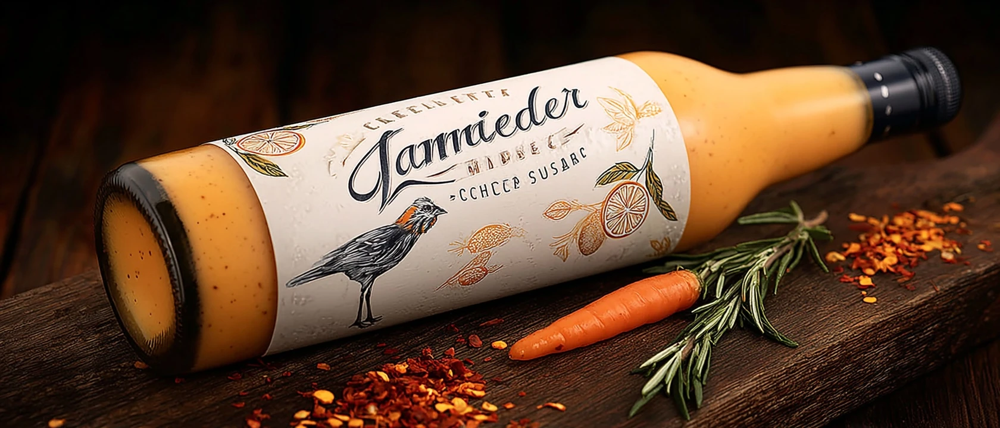
The protein bar category has 800 SKUs and they all taste like chocolate peanut butter or a birthday cake. The GLP-1 consumer eating 300–500 fewer calories per day doesn't want another sweet bar — they want something that feels like a meal. The Orange Chicken Protein Bar is exactly that: 22g protein, 4g prebiotic fiber, orange-glazed chicken pieces bound in a savory-sweet matrix that actually tastes like the dish it's named after.
The bar uses real pulled chicken breast as the primary protein source (not protein powder), orange zest and ginger in the binder, and a thin orange glaze coat that adds the sweet-citrus finish without a sugar spike. 220 calories, 3g sugar, no artificial sweeteners. Packaged in a matte wrapper that looks nothing like a conventional protein bar — it looks like a premium snack, because it is one.
The first move is a 12-bar DTC sample pack targeting gym-adjacent consumers who are bored with sweet protein and explicitly searching for alternatives. The TikTok hook writes itself: "I made a protein bar that tastes like Panda Express."
| Pulled chicken breast (IQF, 22g protein per bar) | $0.88/bar |
| Orange glaze + ginger + binder | $0.24/bar |
| Prebiotic fiber blend | $0.12/bar |
| Wrapper + packaging | $0.22/bar |
| Bar co-packing | $0.44/bar |
| Total COGS | ~$1.90/bar |
| Target retail | $3.99–$4.49 / bar |
| Gross margin (to brand) | ~44% assumption |
Meat-based bar formulation is more complex than standard protein bars. Requires co-packer with meat handling certification. Refrigerated or nitrogen-flushed shelf-stable depending on format choice. Cold chain adds complexity. Key R&D challenge: achieving the orange-ginger glaze finish at scale without texture degradation.
"The sauce. The boost. One bottle. You choose the ratio."
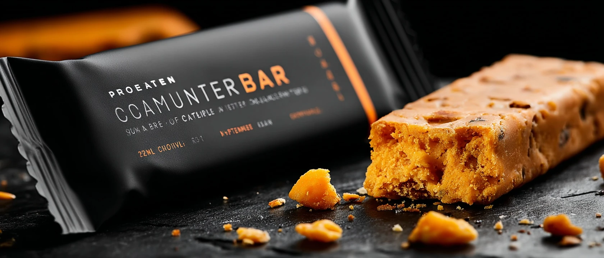
What if the packaging itself was the product differentiator — not the ingredients? The Dual-Chamber Sauce Bottle holds orange chicken sauce in one chamber and a functional elixir (ginger + turmeric prebiotic concentrate) in the adjacent chamber. You squeeze both simultaneously, controlling the ratio at the moment of pour. Heavy on sauce for a classic orange chicken experience. Heavy on elixir for a lighter, more gut-supportive drizzle. The mixing point is at the nozzle — the two liquids meet in the air and land together on your food.
The innovation is in the bottle engineering: a transparent dual-lumen squeeze bottle where the sauce-to-elixir ratio is visible and adjustable by finger pressure. It's a physical experience that's inherently TikTok-able — you can see both chambers, you can control them, and the result on your plate is visually distinct depending on your blend. First run: Orange Sauce + Ginger Prebiotic. Future runs: Teriyaki + Lion's Mane. General Tso + Magnesium.
The shelf presence is unlike anything else in the condiment aisle. Two-toned, transparent, architectural. It doesn't need to scream "functional" — the bottle shows you.
| Dual-lumen bottle (custom mold, amortized) | $1.20/unit |
| Orange chicken sauce (chamber 1) | $0.32/unit |
| Ginger prebiotic elixir (chamber 2) | $0.28/unit |
| Co-packing (dual-fill) | $0.65/unit |
| Label + sleeve | $0.22/unit |
| Total COGS | ~$2.67/unit |
| Target retail | $16.99 / DTC, $12.99 / retail |
| Gross margin | ~60% DTC (assumption) |
Custom bottle tooling is the primary barrier — $80K–120K mold cost, amortized over minimum 50K units. Dual-fill co-packing is not standard; requires specialized equipment or manual operation at small scale. Shelf-stable formulation in both chambers must be validated for separation and flavor stability over 12-month shelf life.
"The snack where lion's mane meets orange chicken."
Mushrooms are the ingredient of the year at Expo West 2026. Lion's mane, shiitake, and reishi are moving from niche adaptogenic supplements to everyday snack formats. And orange chicken already has a culinary mushroom analog — meat-and-mushroom blends are the fastest-growing protein format in the frozen aisle because they're cheaper to produce and hit both flavor and protein targets simultaneously.
Orange Shiitake Adaptogenic Bites takes that insight and builds a snack bag around it: shiitake mushroom caps with lion's mane mycelium powder in the coating, glazed in an orange-chili sauce, baked (not fried), and sealed in a matte kraft bag that reads premium functional snack, not cheap mushroom chip. The flavor is genuinely orange chicken-adjacent — the shiitake provides the savory umami base, the orange glaze delivers the sweet-citrus top note, the chili adds the finish.
It's simultaneously a mushroom snack, a functional adaptogenic, and a plant-based orange chicken tribute. Three audience entry points from one product.
| Shiitake caps (dried, 2.5oz yield) | $1.10/bag |
| Lion's mane extract powder (coating) | $0.28/bag |
| Orange-chili glaze | $0.18/bag |
| Kraft bag + print | $0.38/bag |
| Baking + co-packing | $0.55/bag |
| Total COGS | ~$2.49/bag |
| Target retail | $8.99 / 2.5oz |
| Gross margin | ~50% assumption |
Dried mushroom snack manufacturing is established. Lion's mane extract powder is shelf-stable and easy to incorporate in coating. Key challenge: sourcing consistent shiitake quality and achieving flavor uniformity in the orange-chili glaze across production runs. Shelf-stable, no cold chain.
"Korean heat. Chinese citrus. American comfort."
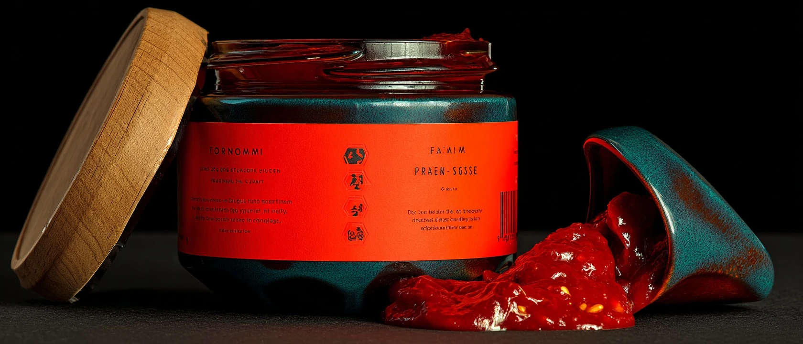
Gochujang hit mainstream American consciousness in 2022–2023 and hasn't slowed down. It's now available at Walmart, Target, and every grocery in between. But the American palate that discovered gochujang also already loves orange chicken — and nobody has fused them. Orange-Gochujang Sauce takes the sweet-citrus-chili foundation of orange chicken and builds it with gochujang's fermented, funky, deeply savory heat instead of generic chili sauce. The result is more complex, more layered, and more culturally authentic than standard orange chicken sauce.
It's a cooking sauce AND a condiment. Use it as a marinade for chicken thighs, a glaze for sheet pan vegetables, a dipping sauce for dumplings, or a bold alternative to your standard orange chicken sauce. The jar is squat and ceramic-inspired, evoking Korean pantry aesthetics. The label tells you exactly what's in it: orange, gochujang, ginger, garlic, sesame. No mystery. No filler.
The cultural story writes itself: the dish every American Asian restaurant makes, with the ingredient every serious home cook is already using. It's not fusion for the sake of it — it's the natural meeting point of two things people already love.
| Gochujang base (imported, premium) | $0.35/jar |
| Orange juice + zest | $0.18/jar |
| Ginger + garlic + sesame | $0.12/jar |
| Ceramic-style jar + lid + label | $0.58/jar |
| Hot-fill co-packing | $0.32/jar |
| Total COGS | ~$1.55/jar |
| Target retail | $9.99 / 10oz |
| Gross margin | ~54% assumption |
Hot-fill sauce manufacturing is well-established. Gochujang is readily available from Korean importers in commercial quantities. Shelf-stable, no cold chain. Key challenge: achieving consistent gochujang-to-orange balance across batches and securing premium ceramic-look jar at competitive cost.
"The wind-down drink for people who order takeout for dinner."
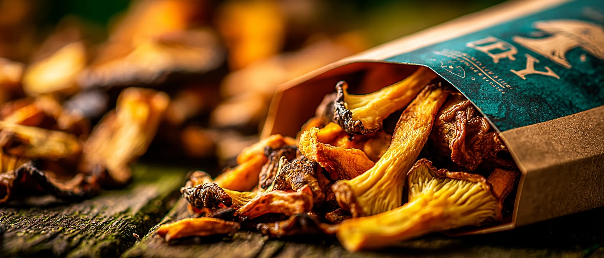
Magnesium was the breakout supplement of 2025, showing up in everything from sleep gummies to sparkling water. But the beverage format that emerged was almost uniformly sweet and berry-flavored — nothing that matched the flavor palate of people who actually eat dinner and want a wind-down drink that works with their food, not against it. The Orange Ginger Magnesium Sleep Tonic is an evening drink designed for exactly that moment: after the takeout, before the screen, as the transition ritual.
The flavor logic is sound: orange and ginger are both warming, digestive-supportive flavors that feel appropriate after a meal. Magnesium bisglycinate (the highly absorbable form) at 200mg per bottle. A splash of chamomile and lemon balm for the sedative note. Naturally sweetened with a small amount of date syrup. 25 calories, no caffeine, no melatonin (which causes grogginess in many users). The dark amber bottle with a midnight blue label reads as ritual object, not supplement.
The positioning is occasion-specific and that's the entire point: "Drink this after dinner. Feel the wind-down." No broad health claims, just a well-understood consumer moment executed with precision.
| Magnesium bisglycinate (200mg) | $0.18/bottle |
| Orange juice + ginger extract | $0.14/bottle |
| Chamomile + lemon balm | $0.06/bottle |
| Date syrup (sweetener) | $0.08/bottle |
| Dark amber glass bottle + cap + label | $0.62/bottle |
| Cold-fill co-packing | $0.44/bottle |
| Total COGS | ~$1.52/bottle |
| Target retail | $5.99 / 8oz (DTC 4-pack: $22) |
| Gross margin | ~58% DTC assumption |
RTD magnesium beverage formulation is achievable with beverage R&D partner. Key challenge: magnesium can cause off-notes in flavor — bisglycinate form minimizes this but requires taste panel validation. Cold fill co-packing required for fresh flavor profile. Refrigerated retail preferred; shelf-stable format possible with HPP processing.
"Hydration that tastes like the sauce, not the lab."
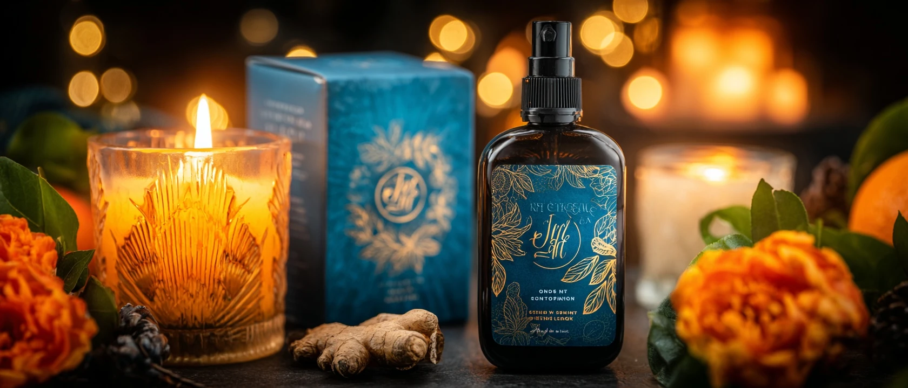
LMNT proved that the electrolyte powder market would support bold, non-sweet flavors. Watermelon Salt, Mango Chili — savory-adjacent flavor profiles that broke from the Gatorade blue-raspberry tradition. Nobody has done Orange Ginger for electrolytes yet, and it's the most obvious next move: mandarin orange and fresh ginger are both high-recognition flavors, both have genuine functional associations (ginger: anti-inflammatory, digestive), and together they create a warm-citrus hydration flavor that works before a workout, after a workout, and during a meal.
The formula: sodium 1000mg, potassium 200mg, magnesium 60mg, ginger root extract 250mg, mandarin orange flavor (real juice powder). Zero sugar. Zero carbs. Keto/GLP-1 compatible. The sachet packaging is matte foil with a vivid orange design. The box of 30 sachets is designed to sit on a kitchen counter, not hide in a gym bag.
The kitchen counter positioning is deliberate: this isn't only a gym product. It's a hydration upgrade for the person who drinks water with dinner and would prefer something that actually tastes like something. The orange-ginger flavor bridges the gym and the dinner table.
| Sodium + potassium + magnesium blend | $0.08/sachet |
| Ginger root extract + orange juice powder | $0.06/sachet |
| Foil sachet + print | $0.09/sachet |
| Powder blending + filling co-pack | $0.12/sachet |
| Total COGS | ~$0.35/sachet |
| Target retail | $39.99 / 30-count box ($1.33/sachet) |
| Gross margin | ~62% assumption |
Dry powder blending is the simplest manufacturing format in this portfolio. Shelf-stable, no cold chain. Sachet co-packers widely available. Key challenge: achieving natural orange-ginger flavor without bitterness at commercial scale. Ginger extract sourcing consistency is important. Fastest idea in the portfolio to reach a saleable sample.
"All the orange chicken. 350 calories. 26g protein. Zero guilt."
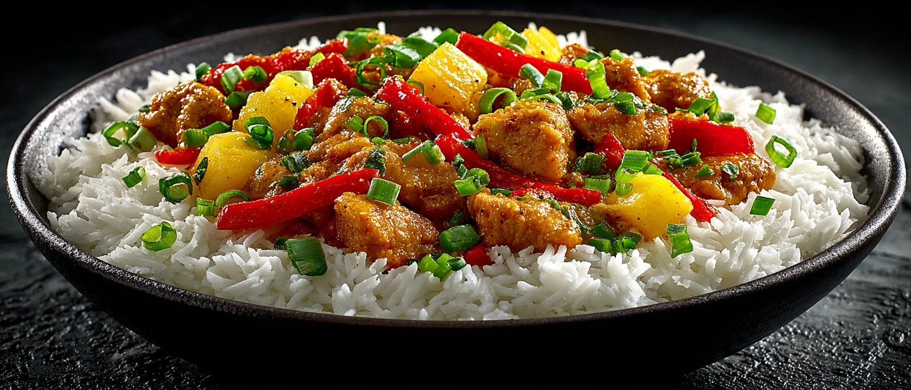
The GLP-1 consumer is eating 21% fewer calories but hasn't stopped wanting orange chicken. The Functional Takeout Frozen Bowl is the obvious response: whole-muscle chicken, real orange sauce (NFC mandarin, no HFCS), brown rice or cauliflower rice, prebiotic fiber blend, 26g protein, 350 calories. GLP-1 friendly portioning — single-serve, sealed, microwave-ready in 4 minutes.
The packaging does the work of explaining itself: big protein number on the front, clean ingredient list on the back, no asterisks. The design borrows from premium health food aesthetics, not the institutional frozen aisle. It costs more than Banquet and less than Factor, and it fills the gap between "cheap frozen dinner" and "delivered meal kit."
| Whole-muscle chicken (IQF, single-serve) | $1.65 |
| Orange sauce + rice/cauliflower | $0.72 |
| Prebiotic fiber add | $0.16 |
| Tray + lidding + box | $0.42 |
| Co-packing (frozen) | $0.88 |
| COGS | ~$3.83 |
| Target retail | $8.99 |
| Gross margin | ~40% assumption |
Frozen meal co-packing is established but requires cold-chain distribution. IQF chicken supply chain is stable. Key challenge: maintaining sauce texture through freeze-thaw cycle without degradation.
"Oven to table. Lid becomes the sauce cup. Zero dishes."
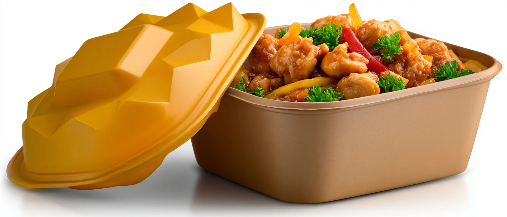
The frozen meal tray has been essentially unchanged since TV dinners. A molded fiber or aluminum tray, a film lid, and a cardboard sleeve. The Serve-From-Pack Frozen Tray reimagines the vessel itself: an oven-safe and microwave-safe molded fiber tray that becomes the serving bowl (no transfer needed), with a snap-off lid that converts into a sauce cup for the extra orange glaze packet sealed underneath. You heat, you snap, you pour, you eat. One container, zero dishes.
The utility story is the brand story: "The last container you'll ever have to wash." It speaks directly to the convenience-first consumer who doesn't want to dirty dishes for a solo lunch. The sauce-cup lid is the hero detail that makes the whole concept feel considered, not just functional.
| Molded fiber oven-safe tray (custom) | $0.72 |
| Snap-off sauce cup lid | $0.28 |
| Orange chicken contents | $2.40 |
| Sauce packet + insert | $0.18 |
| Co-packing (frozen) | $0.95 |
| COGS | ~$4.53 |
| Target retail | $10.99 |
| Gross margin | ~38% assumption |
Custom molded fiber tooling is the primary barrier ($60K–100K). Snap-off lid mechanism requires engineering validation. Oven-safe fiber trays exist but dual-format (oven + microwave) compliance requires testing. Frozen co-packing with custom tray adds complexity.
"Whole-muscle chicken. Real orange glaze. Straight from the wok."
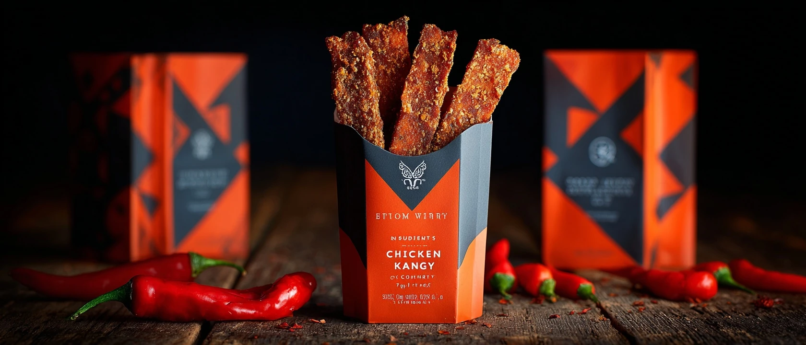
The premium jerky market is $3B and growing — but the flavor innovation has stagnated around teriyaki, peppered, and BBQ. Orange chicken jerky is the obvious move nobody has made: whole-muscle chicken breast strips, marinated in NFC mandarin orange, ginger, low-sodium soy, and a touch of chili, then slow-dried to a chewy, glazed finish. 18g protein per 2oz bag. GLP-1 aligned: high protein, low carb, real ingredients.
The premium stand-up pouch with a kraft-paper finish and a window panel showing the glazed chicken strips makes the product sell itself on shelf. It sits in the better-for-you snack set next to Epic and Country Archer, but tastes like something entirely new.
| Chicken breast (whole muscle, IQF) | $1.20/bag |
| Orange marinade + ginger + soy | $0.22/bag |
| Stand-up pouch + window + print | $0.35/bag |
| Drying + co-packing (meat-certified) | $0.55/bag |
| COGS | ~$2.32/bag |
| Target retail | $7.99 / 2oz |
| Gross margin | ~46% assumption |
Meat snack co-packing is well-established. USDA-inspected facility required. NFC orange sourcing for marinade needs qualification. Shelf-stable at ambient — no cold chain. Key challenge: achieving consistent orange glaze finish without caramelization that darkens the product unattractively.
"300 calories. 20g protein. Pull the tab. That's it."
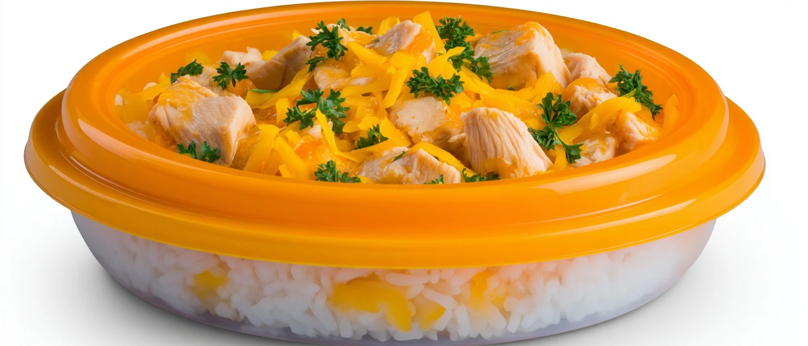
The single-serve portion-controlled meal cup is the downmarket entry into the GLP-1 consumer wave. A 300-calorie orange chicken and rice cup, in a microwave-safe vessel, with a peel-back film lid. 20g protein. Pull the tab, microwave 2 minutes, eat directly from the cup. No transfer. No dishes. No decisions. Priced at $3.99 — cheaper than fast food, cleaner than a Healthy Choice, and explicitly positioned for the GLP-1 lifestyle.
The "GLP-1 friendly" label claim is the unlock. As of 2026, GLP-1 users are 1 in 8 Americans and growing — and the grocery industry hasn't built a product that speaks to them by name. This does. The cup design is clean and clinical but warm — not a medical-looking package, but one that communicates precision and intentionality.
| Chicken + rice + sauce (cup fill) | $1.10 |
| Microwave-safe cup + peel film | $0.32 |
| Outer sleeve + print | $0.12 |
| Frozen co-packing | $0.55 |
| COGS | ~$2.09 |
| Target retail | $3.99 |
| Gross margin | ~38% assumption |
Cup filling for frozen meals is established but requires co-packer with cup-form capability. Microwave-safe cup sourcing at food-grade spec required. Cold chain distribution. Key challenge: sauce texture through freeze-thaw without starch breakdown.
"The viral nutrition hack meets the dish everyone loves."
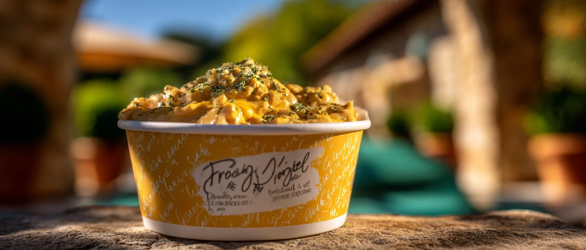
Cottage cheese had its TikTok renaissance in 2024 — people discovered that blended cottage cheese becomes an ultra-creamy, high-protein sauce base for almost anything. The Cottage Cheese Orange Chicken Bowl takes that insight to a ready-to-heat format: orange chicken with a hidden cottage cheese base whipped into the sauce for creaminess, extra protein, and a subtle tang that makes the orange notes brighter.
The word "cottage cheese" doesn't need to lead the packaging — it's listed in the ingredients and called out in a corner badge ("28g protein"). The flavor experience is "richer orange chicken" not "health food." The viral hook is the reveal: you'd never know it's in there. That's a TikTok video, and that's a purchase driver.
| Orange chicken + sauce | $1.85 |
| Cottage cheese base (blended, 2% fat) | $0.42 |
| Refrigerated bowl + lid + sleeve | $0.48 |
| Co-packing (refrigerated) | $0.75 |
| COGS | ~$3.50 |
| Target retail | $9.99 |
| Gross margin | ~45% assumption |
Refrigerated meal co-packing is more complex than frozen due to shorter shelf life (14–21 days). Cold chain required throughout. Key challenge: cottage cheese texture integration — must blend smoothly into sauce without graininess at serve temperature.
"All the flavor. 10g collagen. Zero sugar."
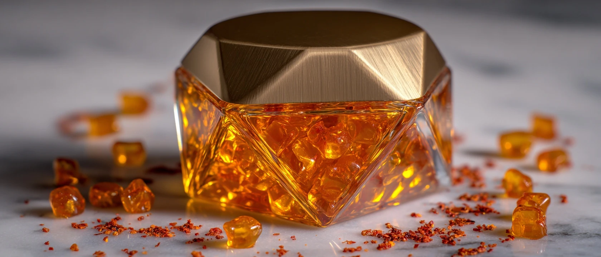
Collagen gummies are a $3B+ supplement category. They all taste like generic "citrus" or "berry." Nobody has leaned into orange chicken's specific flavor profile — mandarin orange zest + a whisper of ginger — in a gummy format. Orange Collagen Gummies deliver 10g marine collagen per serving, sweetened with monk fruit, with a subtle chili warmth in the finish that echoes orange chicken without being weird.
The chili note is the twist. It sounds unexpected but it's a proven flavor pattern — Mexican candy has used chili + citrus for decades. The gummy makes you pause, then it makes you reach for another. The amber glass jar, hexagonal, with a gold lid, is a shelf showpiece in the beauty-wellness supplement aisle. The claim: "Orange. Ginger. Chili. Collagen." Everything you need in four words.
| Marine collagen (10g/serving, 30 servings) | $8.50/jar |
| Orange zest + ginger + chili extract | $1.20/jar |
| Monk fruit + gummy base | $2.40/jar |
| Hexagonal glass jar + gold lid + label | $2.80/jar |
| Gummy co-packing | $3.20/jar |
| COGS | ~$18.10/jar |
| Target retail | $42.99 / 30 servings |
| Gross margin | ~52% assumption |
Gummy supplement manufacturing is established. Marine collagen can be tricky to incorporate at high doses without texture issues — requires gummy co-packer experienced with protein inclusion. Chili extract dosing requires precision to achieve "pleasant warmth" without burning. Shelf-stable. No cold chain.
"The collagen-rich soup that tastes like your favorite order."
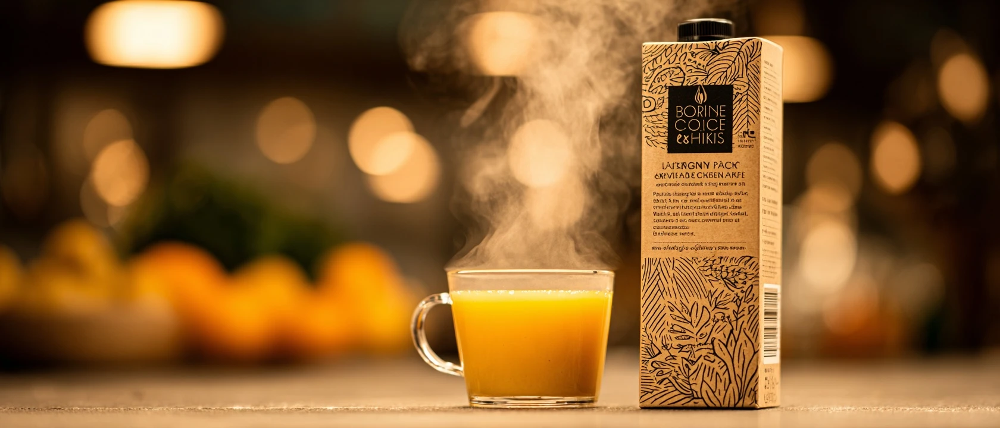
Bone broth is a $700M market and still growing. Kettle & Fire dominates with classic chicken and beef. Nobody has done a flavored bone broth that takes an existing beloved culinary profile and builds a soup around it. Orange Chicken Bone Broth takes the flavor backbone of orange chicken — mandarin, ginger, soy, chili — and infuses it into a 12-hour simmered chicken bone broth base. The result is a silky, collagen-rich soup with 12g protein from the broth and an orange-forward flavor that hits like a warm hug.
Drink it from a mug. Pour it over noodles. Use it as the base for a stir-fry. The tall kraft-look carton with a clean, bold label does the work on shelf. The GLP-1 positioning is natural: warm, satiating, low calorie, high protein, digestive-supportive.
| Bone broth base (chicken, 12hr simmer) | $1.40/carton |
| Orange + ginger + soy flavor infusion | $0.28/carton |
| Kraft-look carton + cap | $0.55/carton |
| Aseptic co-packing | $0.85/carton |
| COGS | ~$3.08/carton |
| Target retail | $8.99 / 16oz |
| Gross margin | ~48% assumption |
Aseptic carton filling for shelf-stable broth is established. Key challenge: achieving orange-ginger flavor profile in broth that survives high-heat aseptic processing without flavor degradation. 12-hour bone broth base available from broth co-packers including Kettle & Fire's contract manufacturing partners.
"Yuzu. Blood orange. Mandarin. The orange chicken for people who know what yuzu is."
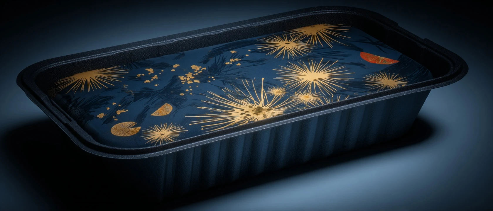
The premium take: what if instead of just making orange chicken cleaner, you made it dramatically more complex and citrus-forward? Super-Citrus Premium Orange Chicken uses a triple-citrus sauce — yuzu, blood orange, and mandarin — inspired by Japanese premium citrus traditions and positioned as the "elevated" interpretation of America's favorite dish. Dark midnight blue packaging with minimalist design. Restaurant-quality ingredients. $14.99 in the Whole Foods freezer.
This isn't orange chicken for the masses. It's orange chicken for the person who knows what yuzu is and has been waiting for someone to treat the dish with the same seriousness they'd give a premium teriyaki or a restaurant ramen kit. The Japanese citrus complexity makes the familiar completely new.
| Yuzu juice concentrate + blood orange + mandarin | $1.10 |
| Whole-muscle chicken (antibiotic-free) | $2.20 |
| Premium frozen box (midnight blue, 2-color print) | $0.65 |
| Molded fiber tray | $0.38 |
| Co-packing | $1.10 |
| COGS | ~$5.43 |
| Target retail | $14.99 |
| Gross margin | ~46% assumption |
Yuzu juice concentrate import from Japan requires qualified supplier and lead time planning. Antibiotic-free whole-muscle chicken at premium spec adds cost. Frozen distribution with cold chain standard. Key challenge: yuzu flavor survives freeze-thaw without harsh notes — requires test batches with co-man.
"Make any protein taste like Panda. $1.99 a packet."
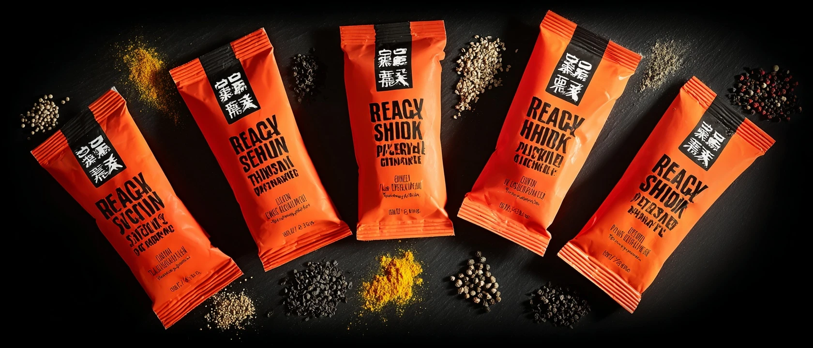
McCormick and Old El Paso built empires on the seasoning packet. Taco Tuesday exists because of a $1.49 packet. Nobody has done this for orange chicken. The Orange Chicken Seasoning Packet is exactly what it sounds like: a foil packet with the dry spice blend + a small liquid orange flavor concentrate that, when combined with any protein and a splash of water, turns whatever you're cooking into orange chicken in 5 minutes. Cook it in a skillet. Pour over rice. Done.
The mass market angle is explicit — this goes in the meal kit aisle next to McCormick's Recipe Mixes at $1.99 a packet, 5-pack for $8.99. The "orange chicken for any protein" angle expands the addressable market: chicken, tofu, cauliflower, shrimp. The recipe is on the back. This is the fastest idea in the portfolio to bring to market and the highest volume potential at mass retail.
| Dry spice blend (orange peel, ginger, chili, garlic) | $0.12/packet |
| Liquid orange concentrate sachet | $0.08/packet |
| Foil packet + outer sleeve | $0.14/packet |
| Blending + filling co-pack | $0.18/packet |
| COGS | ~$0.52/packet |
| Target retail | $1.99 / single, $8.99 / 5-pack |
| Gross margin | ~58% assumption |
Simplest manufacturing in the portfolio. Dry blending + liquid sacheting. No cold chain. Shelf-stable 18+ months. Key challenge: achieving restaurant-quality flavor from a dry-blend format — requires R&D on orange flavor concentration and chili balance. Fastest idea to market by a significant margin.
"The sauce. The heat. The crunch. Zero chicken required."
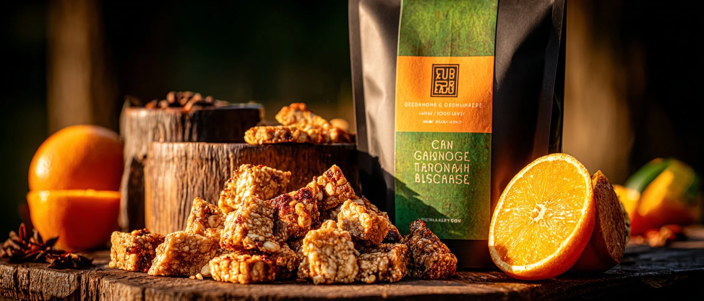
Tempeh is the plant-based protein that actually tastes like something. It's fermented, it's nutty, it's chewy, and when it's glazed in orange-chili sauce and baked to a crunch, it's remarkably close to orange chicken — close enough that the comparison is the marketing. Orange Chicken Tempeh Bites are the plant-based answer to the orange chicken craving: tempeh cubes, marinated in orange-soy-ginger overnight, glazed with a sweet-chili orange finish, baked (not fried), and packaged as a refrigerated snack or meal-starter.
The "orange chicken" in the name is deliberate. It's not "tempeh in orange sauce." It's tempeh that tastes like orange chicken. The taste-test angle is the TikTok video. The Blue Ocean move is entering the plant-based protein space not by making fake meat, but by making a beloved flavor profile available to non-meat-eaters without apology.
| Organic tempeh (8oz yield, single-serve) | $1.20 |
| Orange-chili marinade + glaze | $0.28 |
| Baking + packaging | $0.55 |
| Refrigerated tray + film + label | $0.42 |
| COGS | ~$2.45 |
| Target retail | $7.99 / 8oz |
| Gross margin | ~48% assumption |
Tempeh manufacturing is specialized but available — Lightlife co-packers and independent tempeh producers. Refrigerated format requires cold chain. Key challenge: achieving orange-chili glaze uniformity on tempeh texture at scale. Short shelf life (30–45 days refrigerated) limits distribution radius.
This workshop ran 10 ideation methods from the full-stack-ideation library against the "Functional Indulgence in Asian Comfort Format" cluster. 30 raw ideas were generated, scored on 6 criteria (Originality 20%, Market Size 20%, Margin 20%, Visual Appeal 15%, Speed to Prototype 15%, Research Backing 10%), and filtered to 20 survivors. Stage 0 research was Level 2 (Trend Convergence) — Brady identified 4 converging themes; research validated each and synthesized a sharp cluster prompt.
| Category | Market Size | Growth | Key Signal |
|---|---|---|---|
| Functional Beverages (US) | $245.78B (2026) | 8.8% CAGR to 2033 | GLP-1 influence + prebiotic soda explosion |
| Frozen Food (US) | $93.5B | ~4% annual | Health-aligned reformulations fastest-growing subcategory |
| Premium Jerky / Meat Snacks | $3B+ | 6% annual | Flavor innovation cited as primary growth driver |
| Protein Bar | $7.4B | 5% annual | Savory protein formats underexplored; sweet monopoly is vulnerability |
| Collagen Supplements | $3B+ | 8% annual | Gummy format fastest-growing; flavor differentiation is key |
| Hot Sauce / Condiments | $3.77B | 4.3% annual | Swicy (sweet+spicy) is #1 NPD trend in category |
| Bone Broth | $700M | 6% annual | Flavored broth subcategory underdeveloped |
| Electrolyte Powder | $1.8B | 12% annual | Bold flavor innovation driving new entrant growth |
GLP-1 is the defining consumer health behavior of 2026. 1 in 8 Americans is now on a GLP-1 medication (various estimates). These consumers eat 21% fewer calories on average (KPMG 2026), spend 33% less on groceries, but 48% of Gen Z/Millennial GLP-1 users are dining out MORE — not less (Acosta Group, April 2026). This is not a diet trend. It is a permanent behavioral restructuring of how Americans relate to food: smaller portions, higher protein prioritization, digestive sensitivity, and continued desire for indulgent flavors.
Orange chicken specifically has been America's most-ordered Chinese-American dish for 15+ consecutive years. Panda Express alone moves over 100 million pounds of orange chicken per year. The flavor profile — mandarin citrus, ginger, chili, soy — maps perfectly onto 2026's top flavor trends (swicy, global citrus, warming botanicals). The combination of massive emotional equity and perfect macro-trend alignment is rare. This cluster captures that window.
| Source | Publication | Key Finding Used |
|---|---|---|
| NIQ / NielsenIQ | Expo West 2026 Report (March 9, 2026) | Protein arms race, fiber co-star, mushrooms mainstream, GLP-1 formulation influence |
| Acosta Group | GLP-1 Consumer Behavior Study (April 14, 2026) | 48% Gen Z/Millennials dining out more; GLP-1 halo effect |
| KPMG | GLP-1 Grocery Behavior (2026) | 21% fewer calories; 33% lower grocery spend |
| Coherent Market Insights | Functional Beverage Market Report (2026) | $245.78B market; 8.8% CAGR to 2033 |
| Conagra Brands | Future of Frozen Food 2026 (January 14, 2026) | $93.5B frozen market; health reformulations fastest-growing |
| IFT | Outlook 2026: Flavor Trends | Swicy, savory-sweet, Japanese citrus leading all innovation categories |
| MarketIntelo | GLP-1 Drug Impact on Food Market (April 9, 2026) | $26.1B market impact projected by 2034 |
| Tan Do Beverage | Beverage Development 2026 | System-led vs feature-led innovation shift; moment-based positioning |
| Korpack / Multiple | CPG Packaging State 2025–2026 | EPR regulations, molded fiber opportunity, multi-channel packaging |